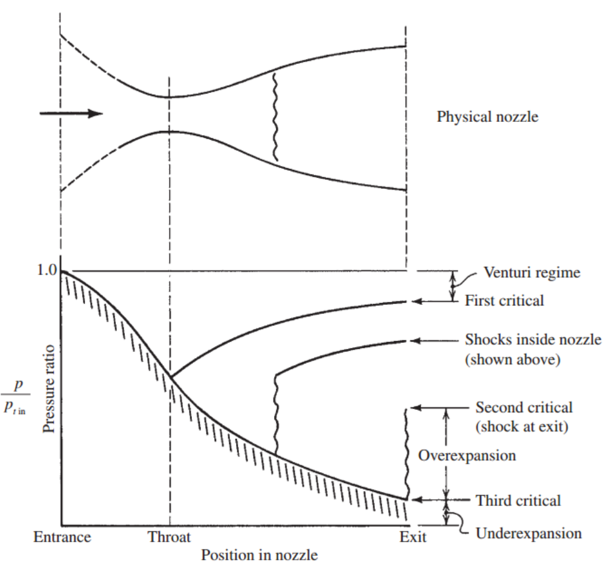

지금까지 Prandtl - Meyer
Compression Flow
Expansion Flow
에 대해서 탐구해 보았다.
간략하게 정리해보자면
1. Prandtl Meyer Compression wave:
-수많은 very weak Oblique shock의 집합
-shock과 같은 효과(압력 증가, 속도 감소)
-Isentropic process(엔트로피 변화x)
-방향 전환
-Deflection angle이 일정하지않고
연속적으로 변하는 경우 발생(Round turn)
2.Oblique shock wave
-방향전환
-Normal shock보다는 약함,
그래도 (압력 증가, 속도 감소)
3. Prandtl Meyer Expansion wave:
-정확히 Compression wave reverse vers.
-압력 감소, 속도 증가
-Isentropic process
이제 진짜 실제로 어떤 경우에 위 Flow들이 발생하는지를 알아보자
1. Nozzle Exit.
기억 하실지 모르겠지만....
[Ch7 oblique shock part2 그리고 Ch6 Normal shock]
Nozzle에서 아직 해석하지 못한 문제가 있었다.
바로
Problem1. 2nd Critical > P rec > 3rd Critical
Problem2. P rec < 3rd Critical
인 경우,
첫번째 문제부터 해결하러 가보자.

[Remind,
2nd Critical = P rec 인 경우]
밑 사진처럼 exit에서 P1이지만
Exit 바깥 압력 P receiver(P rec) 와 일치 해야 하므로,
Normal shock을 이용해 급격한 수직압력 상승으로
P1 -> P2 = P rec 를 달성하였고
이때의 P rec = 2nd Critical 이라고 정의하였다.
![[Gas Dynamics] Ch 8 Prandtl-Meyer Flow - Application - Nozzle](./images/img-002.jpg)
하지만 만약 2nd Critical > P rec > 3rd Critical 인 경우는???
Normal shock은 너무나도 큰 압력 상승을 시켜버리기 때문에
더 약한 shock인 Oblique shock이 발생하여
비교적 작은 압력상승을 시켜주어
바깥 압력과 일치하게 만들 수 있다.
그런데,
Oblique shock의 특징 중 하나는 방향이 굴절 된다는 것이었다[ch7]
밑의 사진을 보면 약한 압력상승으로(P1 -> P2 = P rec)을 맞춰주었지만
Region 2 의 유체 방향은 꺽여 있음을 알 수 있다.
![[Gas Dynamics] Ch 8 Prandtl-Meyer Flow - Application - Nozzle](./images/img-003.png)
그렇다면 다음 질문은 "꺽이는게 문제가 될까???"
이는 [Ch7 - Part2] post에서 언급 했다 싶이 Symmetric 관점에서 바라본
Solid boundary condition,
Centerline flow direction(오른쪽)과 맞지 않는다.
다시 설명해보자면,
노즐은 중앙선을 기준으로 Symmetric 하는 것은 자명하다.
여기서 오른쪽 방향을 +x 라고 정의하자
혹여나 위 그림 빨간색 공기의 흐름같이, +x방향이 아닌 유체가 있어도
symmetric하기 때문에 반대쪽에도 같이 방향이 꺽인 유체가 있을 것이다.
그 두 유체가 만나게 되면 +y 방향의 속도는 상쇄되고 +x방향의 속도성분만 남아,
결국 중앙선 근처의 유체는 무조건 +x방향이라는 것이다.
그렇다면 Oblique shock을 지난 Region 2의 유체들은 다시 꺽여야 된다.
여기서 2가지 경우의 수로 나누어서 바라보아야 한다.
why? supersonic, subsonic 꺽는 method가 다르기 때문
Case 1. Region 2 유체 supersonic
Case 2. Region 2 유체 subsonic
즉 Region 1 -> 2의 발단이 된
Oblique shock의 strength
에 따라서
Case가 결정된다.
Case1. Weak Oblique shock -> 영역 1,2의 압력차이,속도차이 작다.
1영역 supersonic flow -> 2영역 super sonic flow.
-> 방향을 꺽으려면 또다른 Oblique shock 필요
Case2. Strong Oblique shock -> 영역 1,2의 압력차이,속도차이 크다.
1영역 super sonic flow -> 2영역 subsonic.
-> 별도의 shock 없이 방향 전환 가능, 상황종료
![[Gas Dynamics] Ch 8 Prandtl-Meyer Flow - Application - Nozzle](./images/img-004.jpg)
보라색 -> 압력차이 큼 -> 영역2 subsonic
-> 방향 전환 쉽게가능 -> 상황종료
검정색 -> 압력차이 작음 -> 영역2 supersonic
-> 방향 전환 별도 oblique shock 필요
그렇다면 검정색의 경우는 oblique shock이 연속적??
정확한 과정을 한번 살펴보자.
※밑 사진에서 P amb = Receiver pressure(P rec)입니다
![[Gas Dynamics] Ch 8 Prandtl-Meyer Flow - Application - Nozzle](./images/img-005.png)
낮은 압력 P1을 주변압력(Pamb)와 맞춰주기 위해서
Weak Oblique shock (A)
:
P1 -> P2 = P amb압력증가 but still supersonic
Supersonic인 경우 꺽인 방향을 다시 +x로 맞추기 위해서
Oblique shock (B )
: P2 = Pamb -> P3 압력증가
문제는 P3 > Pamb 이므로 주변과 만나려면 압력이 감소해야한다.
따라서,
Prandtl Expansion Wave(C)
를 이용해 P3 -> P4=P amb 압력감소
또 이렇게 압력 맞춰주면 방향이 틀려짐;;
Supersonic인 경우 꺽인 방향을 다시 +x로 맞추기 위해서
Prandtl Expansion Wave(D )
: P4 = Pamb -> P5 압력 감소
마지막으로 감소한 압력을 증가시켜 주변 압력과 맞춰준다
Prandtl Compression Wave(E )
: P5
-> P6 = Pamb 압력 증가
이 순환이 계속해서 반복된는 것이다. 언제까지?
Ma < 1 subsonic이 되어 별도의 Shock없이
유체 방향
꺽을 수 있을 때 깢...
In this case, we call
"Overexpanded Nozzle for weak Oblique shock"
이렇게 첫번째 문제
2nd Critical > P rec > 3rd Critical 경우
완벽하게 현상을 해석하였다.
이제 문제가 마지막으로 하나 남았다.
Problem2. P rec < 3rd Critical
![[Gas Dynamics] Ch 8 Prandtl-Meyer Flow - Application - Nozzle](./images/img-006.png)
이 경우 Exit pressure이 주변 압력보다 큰 경우이므로
압력을 감소시켜주어야 한다.
따라서, Prandtl Expansion Wave로 압력 감소시켜주기
그렇기 때문에 위에서 해석한 Over expanded nozzle의
Region 3부터 똑같이 반복된다.
In this case, we call
"Underexpanded nozzle"
이렇게 노즐에 관한 모든 문제들은 해결되었다.
노즐은
ch5 Varying-Area flow
ch6 Standing normal shock
ch7 Oblique shock
ch8 Prandtl-Meyer flow
총4챕터에 걸쳐서 계속해서 언급되고 마지막에 Expansion wave 개념을 이해하고서야
비로서, 모든 현상들이 해석이 됬다.....
나중에 nozzle 총정리하는 post를 만들어보도록 하겠습니다 꼭 ^^